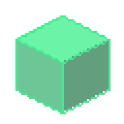
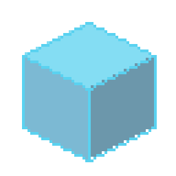
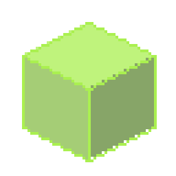

Entidades
Mobs, criaturas y jefes con rig limpio, listos para animar y usar en servidores o mods.
Especialista en la creación de assets, entidades y texturas en Blockbench para servidores, mods y proyectos de Minecraft.
Explorar proyectos
Los modelos agrupados por el proyecto al que pertenecen.

Skins para Minecraft hechas por mí. Pulsa una para verla en 3D.
Mobs, criaturas y jefes con rig limpio, listos para animar y usar en servidores o mods.
Ítems y modelos en mano con texturas a medida y buena lectura en pantalla.
Bloques personalizados y props para dar identidad a mapas y servidores.
Ciclos de reposo, movimiento y ataque, exportables para Java y Bedrock.

Soy Owari, artista 3D especializado en Blockbench. Diseño modelos que se leen bien en pantalla, con texturas limpias y animaciones listas para integrarse en servidores y mods. Cambia este texto por tu propia presentación.
¿Necesitas assets para tu servidor, mod o juego? Cuéntame qué buscas.